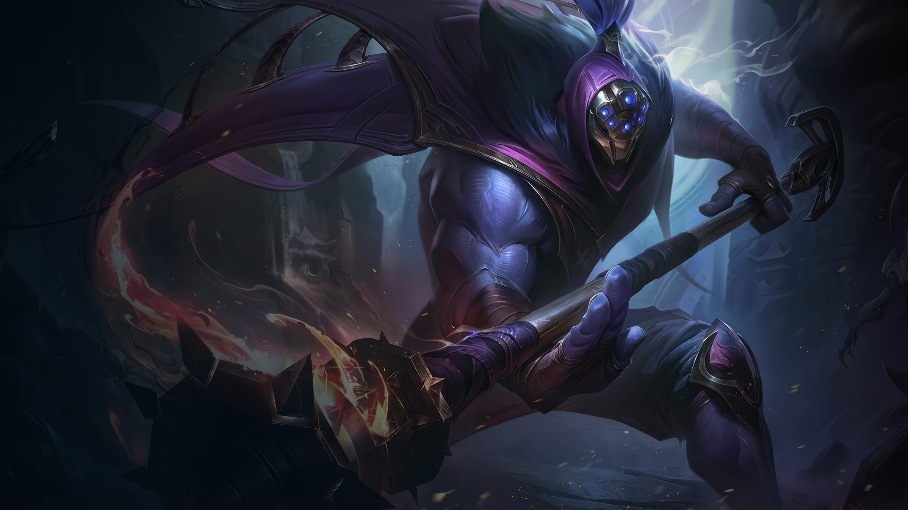

전사 / 난이도: 보통
독특한 무기와 날카로운 독설 모두 따라올 자가 없는 잭스는 이케시아에서 마지막으로 알려진 무기의 달인이다. 풀려난 공허의 잔해로 조국이 기울자, 잭스와 그 무리는 조국의 남은 부분이나마 수호하기로 맹세했다. 마법이 강해지고 잠재하는 위협이 다시금 태동하자, 잭스는 발로란을 떠돌며 만나는 모든 전사에게 이케시아의 마지막 불빛을 휘두른다. 그와 견줄 수 있을 정도로 강한지 시험하기 위해.